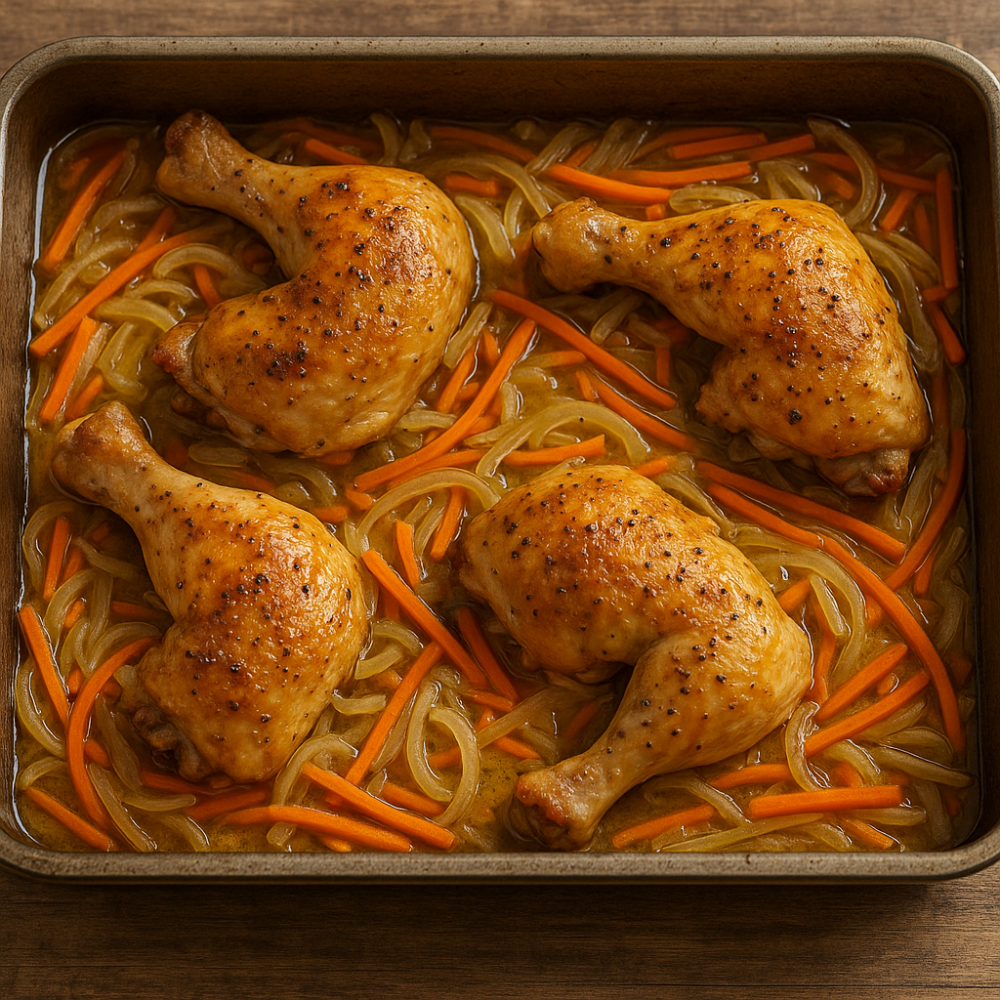

Chicken In White Wine Recipe
Home

Ingredients
- Chicken legs or thighs for two people
- Two onions
- Two carrots
- Olive oil
Instructions
- Take an oven tray and cover the bottom with olive oil.
- Cut the onions and carrots into julienne strips.
- Place the vegetables in the tray along with the chicken, and season with salt and black pepper.
- Preheat the oven to 180 degrees Celsius and place the tray inside.
- Leave it for at least one hour, checking every 30 minutes to turn the chicken over.